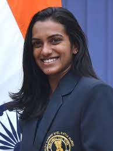

Saina Nehwal is an Indian badminton player who was born on March 17, 1990, in Hisar, Haryana, India. She began playing badminton at a young age and showed great promise from the start.
Her talent and dedication led her to become one of India's most celebrated athletes.
Saina rose to international prominence in 2006 when she won the Philippines Open, becoming the first Indian woman to achieve such a feat in badminton.
Since then, she has been consistently ranked among the top players in the world.
Achivement and Awards:
1. Olympic Bronze Medal(2012)
2. BWF World Championships(2015)
3. Commonwealth Games Gold Medals(2010)
4. Asian Games Bronze Medal(2012)
5. Padma Bhushan(2016)
6. Rajiv Gandhi Khel Ratna(2010)
7. Arjuna Award(2009)
Saina Nehwal's journey has been an inspiration to many aspiring athletes, and she continues to be a prominent figure in Indian sports.
Her dedication and achievements have played a crucial role in popularizing badminton and promoting women's sports in India.
P.V SINDHU

Pusarla Venkata Sindhu, commonly known as P.V. Sindhu, is an Indian badminton player who has made a significant mark in the world of sports. She was born on July 5, 1995, in Hyderabad, Telangana, India.
Sindhu's outstanding talent, determination, and consistent performances have made her one of India's most celebrated athletes.
Achivement and Awards:
1.Silver Medal at 2016 Rio Olympics
2.Gold Medal at 2019 BWF World Championships
3.Asian Games Silver Medal
4.Commonwealth Games Silver Medal
5.BWF World Tour Finals Title
6.Arjuna Award
7.Padma Shri
8,Rajiv Gandhi Khel Ratna
P.V. Sindhu's remarkable achievements have made her a source of inspiration and pride for millions of Indians.Her dedication to the sport and her continuous pursuit of excellence have cemented
status as one of the world's top badminton players. Sindhu's success has played a vital role in popularizing badminton in India and has paved the way for future generations of aspiring athletes.
PULELA GOPICHAND
Pulela Gopichand is a former Indian badminton player and renowned coach who was born on November 16, 1973, in Nagandla, Andhra Pradesh, India.
He is credited with being one of India's most influential badminton personalities and has made significant contributions to the sport.
As a player, Gopichand achieved considerable success in his badminton career, including winning several national and international titles.
However, his true impact on Indian badminton came after his retirement when he focused on coaching and nurturing young talents.
Achivement and Awards:
1. Arjuna Award
2. Dronacharya Award.
3. Padma Bhushan
4. CNN-IBN Indian of the Year - Sports
Pulela Gopichand's relentless dedication to the sport of badminton and his commitment to developing future champions have been instrumental in elevating Indian badminton to new heights.
His coaching legacy continues to inspire and produce world-class badminton players in India.
PRAKASH PADUKONE
Prakash Padukone is a former Indian badminton player who is regarded as one of India's greatest sports icons. He was born on June 10, 1955, in Bangalore (now Bengaluru), Karnataka, India.
Prakash Padukone's achievements in badminton and his contributions to the sport have left a lasting impact on Indian sports.
Achivement and Awards:
1.Arjuna Award
2.Padma Shri
3.Badminton World Federation Hall of Fame
4.Rajiv Gandhi Khel Ratna
5.Padma Bhushan
Prakash Padukone's legacy extends beyond his playing career. His achievements and contributions have inspired generations of Indian badminton playersand have played a crucial role in elevating the sport's popularity in the country.
He continues to be a respected figure in the badminton community, both in India and globally.
SRIKANTH KIDAMBI
Srikanth Kidambi is an Indian badminton player who has gained international recognition for his exceptional skills and achievements in the sport. He was born on February 7, 1993, in Ravulapalem, Andhra Pradesh, India.
Srikanth's remarkable performances have made him one of India's top shuttlers
Achivement and Awards:
1.Padma Shri
2.Rajiv Gandhi Khel Ratna
Srikanth Kidambi's consistency and dedication to the sport have made him one of India's leading badminton players. His success has inspired many aspiring athletes and has significantly contributed to the popularity of badminton in India